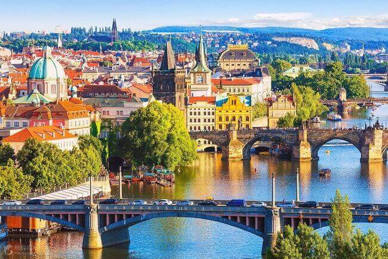
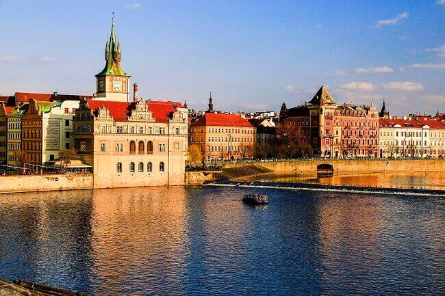
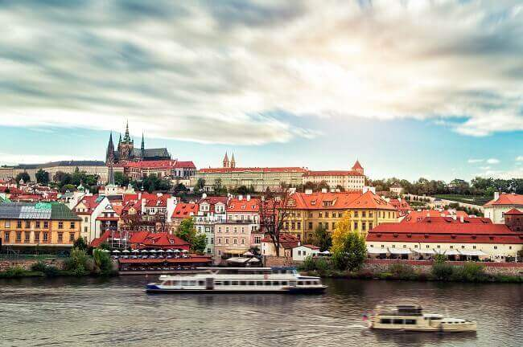
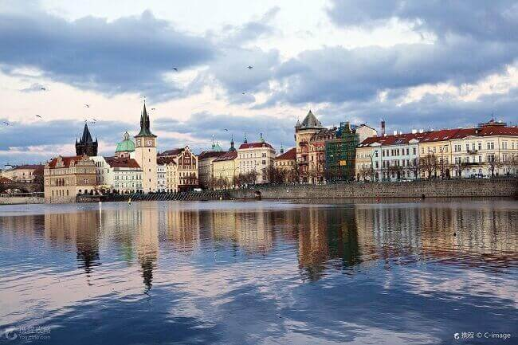

morly旅游圈
捷克共和国原属捷克斯洛伐克社会主义共和国，是欧洲中部的内陆国家。东连斯洛伐克，南接奥地利，北邻波兰，西与德国相邻，面积７８８６６平方公里，其中陆地面积：77276平方公里，水域面积：1590平方公里。 由波希米亚、摩拉维亚和西里西亚３个部分组成。它处在三面隆起的四边形盆地，土地肥沃。北有克尔科诺谢山，南有舒玛瓦山，东部和东南部为平均海拔５００—６００米的捷克—摩拉维亚高原。盆地内大部分地区在海拔５００米以下，有拉贝河平原，比尔森盆地、厄尔士山麓盆地和南捷克湖沼地带。 伏尔塔瓦河最长，流经布拉格。易北河发源于捷克的拉贝河，可以通航。东部摩拉瓦河—奥得河上游河谷地区是捷克盆地与斯洛伐克山地之间地带，称为摩拉瓦河—奥得河走廊，自古是北欧与南欧之间通商要道。全国丘陵起伏，森林密布，风景秀丽。国土分为两大地理区，一为位于西半部的波希米亚高地，另一为位于东半部的喀尔巴阡山地，它由一系列东西走向山脉组成。最高点是海拔为２６５５米的格尔拉霍夫斯基峰。 境内高地、丘陵和盆地相间。边境多山，苏台德山的斯涅日卡山（Snezka），海拔1602米。境内最低海拔Elbe河：115米。气候温和，年降水量平原450-600毫米，山区1200-1600毫米，坡地有混交林和针叶林。矿产有煤、铁，铅、锌、银、铀等。在伏尔塔瓦河上建有大型水电站。 主要民族为捷克族，占原联邦共和国总人口的８１．３％，其他民族有摩拉维亚族（１３．２％）、斯洛伐克族、德意志族和少量的波兰族等。官方语言为捷克语，主要宗教是罗马天主教。 布拉格（Prague），面积４９６平方公里，人口１１７万人（２００４年底）。最低点海拔１９０米，最高点３８０米。气候具有典型的中部大陆型特征，平均气温７月份为１９．５℃，１月份为－０．５℃。主要城市 主要城市还有比尔森、布尔诺、俄斯特拉发等。
尼采认为它是神秘的代表，歌德说它是欧洲最美的城市，卡夫卡在这里出生、创作，米兰·昆德拉以这里为背景写下了《生命不能承受之轻》，如果把和它有关的名人一一列出，恐怕数量足够写一本书。这就是世界上第一个整座城市被指定为世界遗产的布拉格。
直到遇见布拉格，才发现，原来这是真正梦想中的欧洲城市。现实中的童话世界，现实中的霍格沃茨。 有人说，这里是众多悲欢离合故事的起点和终点, 浓缩了捷克艺术的精华和历史的悲欢。如今的布拉格依旧保留着时间的痕迹，走在大街小巷，目光所到之处都能感受到这座古老城市的历史讯息。慢下来细细品味这座城市，听街头艺人歌唱，画家作画，生活，也可以如此。 布拉格的每一处都值得驻足停留，或许一个转身，就会遇见另一番风景。从米兰·昆德拉的《不能承受的生命之轻》，到菲利普·考夫曼的《布拉格之恋》，再到电影《有一个地方只有我们知道》，无不吸引着人们对它的向往。电影以布拉格为故事背景，展现了布拉格的文艺、浪漫和温暖。布拉格，这是个你应该知道的城市。
>Tips:
1,捷克 属海洋性向大陆性气候过渡的温带气候。夏季炎热，冬季寒冷。7、8月是旅游黄金时间，比较热的首都布拉格的温度最高一般30℃。但即使在这个时段气候也很多变，前一天30℃后一天10℃、一天之内从短袖到大围巾厚皮衣很常见。
2,捷克是申根国，需要提前办理签证才能入境。如果仅去捷克 ，可办申根签证或捷克签证；如果去捷克 和其他 欧洲 国家，需要办申根签证。
3,在国内银行不能直接兑换 捷克 克朗。需要先在国内兑换成欧元或美元，再到 捷克 当地将欧元或美元兑换成 捷克 克朗。建议兑换成欧元，因为 捷克 当地有些店铺、酒店、餐厅等可以直接用欧元消费，而且如果还去其他欧元区国家，方便使用。
4,捷克常用的电话卡是Vodafone、T-mobile，都属于国际性电信公司的产品。如果只去捷克 ，或者还去德国等用相同电话卡的国家，建议出行前提前买好电话卡。
内容整理至网络，如有侵权，请联系我们！1255394075@qq.com
 